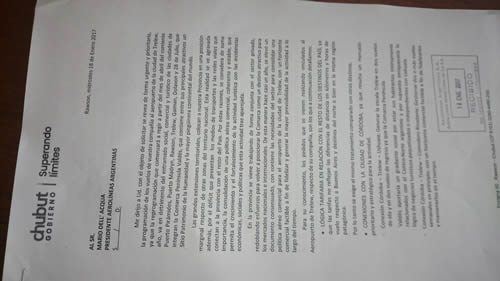

Real Chubut - Agencia de Noticias


Das Neves le pidió al presidente de Aerolíneas que revea la reprogramación de vuelos porque afectan a Chubut

También le solicitó que estas decisiones “no sean tomadas de forma unilateral y sin contemplar la visión de desarrollo de la provincia”. Se lo manifestó en una carta que le envió este miércoles en la que además reiteró el pedido de tener tarifas acordes en relación con el resto de los destinos del país así como la apertura de nuevas rutas aéreas.
El gobernador del Chubut Mario Das Neves le solicitó al presidente de Aerolíneas Argentinas, Mario Dell’ Acqua, “revea de forma urgente y prioritaria” la reprogramación de vuelos que la compañía hará a partir del mes de abril hacia el aeropuerto de Trelew “porque va en detrimento del entramado social, comercial y turístico de las ciudades de Puerto Pirámides, Puerto Madryn, Rawson, Trelew, Gaiman, Dolavon y 28 de Julio que integran la Comarca Península Valdés que contiene entre sus principales atractivos un Sitio Patrimonio de la Humanidad y la mayor pingüinera continental del mundo”.
Así se lo hizo saber en una carta enviada al directivo este miércoles en la que además le solicita que “las reprogramaciones de vuelos que afecten a cualquiera de los aeropuertos de la Provincia del Chubut no sean tomadas de forma unilateral y sin contemplar la visión de desarrollo de esta provincia”.
TARIFAS LOGICAS Y NUEVAS RUTAS
El reclamo por “tarifas lógicas” junto a nuevas conexiones aéreas también fueron recordados por Das Neves en el texto enviado al presidente de Aerolíneas Argentinas. En este sentido y vinculado al aeropuerto de Trelew dijo que “hace casi un año se elevó un documento consensuado con el sector privado” en el que se pidió “lógica tarifaria en relación con el resto de los destinos del país”, remarcando que “las tarifas no reflejan las diferencias de distancia en kilómetros y horas de vuelo respecto a Buenos Aires y destinos del norte o bien en la misma región patagónica. Por lo tanto se exige el mismo tratamiento comparado con otros destinos”.
También le recordó a Dell’ Acqua la necesidad de “conexiones con la ciudad de Córdoba, ya que resulta un mercado prioritario y estratégico para la actividad”, en relación a concretar la conexión Córdoba-Trelew-Ushuaia generando de esta manera “la escala Trelew en dos vuelos de ida y en dos vuelos de regreso” y también la conexión Córdoba- Trelew-Comodoro Rivadavia, de manera de “gestionar dos o más vuelos semanales en principio, con un horizonte comercial factible a fin de fidelizarlos y mantenerlos en el tiempo”.
En cuanto a la conexión Buenos Aires, Das Neves plantea la “Ruta Patagonia Fantástica” que une la Comarca Península Valdés, Calafate y Ushuaia para “generar de dos a tres conexiones a través de Trelew como escala entre Buenos Aires y Calafate, en vuelos ya programados, en algunos a la ida en otros al regreso, en concordancia con la posibilidad de armado de paquetes turísticos o para viajeros independientes”.
Y también pide al presidente de Aerolíneas Argentinas “posicionar al aeropuerto de Trelew como uno de los nodos de distribución de la Patagonia, por su situación geográfica equidistante al resto de los destinos y del mismo modo por las características que lo hacen único (topografía-clima-operatividad anual casi plena con el aeropuerto de Puerto Madryn como base alternativa)”, entre otros puntos.
Además y contextualizando la situación, Das Neves expresa que “las grandes extensiones territoriales colocan a nuestra Provincia en una posición marginal respecto de otras zonas del territorio nacional”, subrayando que “esta realidad se ve agravada además, por el déficit que presentan los medios de transportes y las redes viales que conectan a la provincia con el resto del país. Por estas razones –remarca-, se considera de suma importancia la consolidación de una política aérea comercial, coherente y estable, que permita el crecimiento y el fortalecimiento de la actividad turística con las incidencias económicas, sociales y políticas que esta actividad trae aparejada”.
PUBLICIDAD